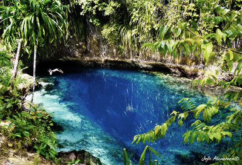

ARMM ( Autonomous Region in Muslim Mindanao)
MAGUINDANAO
Top Things to do
Tombs of Sultan Kudarat and Datu Mastura
Sultan Kudarat
The tomb of Sultan Kudarat, one of the most highly hailed Maguindanao heroes and from whom the name of the municipality derived, and is located in the heart of the municipality.
His eminence manifested the strong will up the early Maguindanaon for self-determination devoid of any foreign influences and also the tomb of Datu Mastura.

Blue Lagoon (Marguez Lagoon)
Dinaig
named after the heavily hued water that tries to fill the brim of the pond. It is naturally enclosure of body of warmth and polarity whispering on of the beauties and splendid ness
too rare to be found anywhere else.
Limpongo Hotspring
Shariff Aguak
the only manifest one of the nature’s breath of awe and wonder. The warm water that gushes forth from the spring provides the wholesome pleasure and relaxation for Cotabato City
dwellers and people from the hinterlands.
Punta Beach
Parang
Is the northern counterpart of Kusiong Beach with Cotabato City as point of reference. City dwellers and people, and nearby dwellers flock to this beach especially during weekends
they get the relaxing breath of sea breeze.
Ous Lady of Lourdes Grotto
Datu Odin Sinsuat
Owned and operated by the Oblates of Mary Immaculate, the holy place with its aura of peace and contentment is a venue where the Cotabatenos find their way if solace and spiritual revival.
Tumingay Lake
Sultan Kudarat
An 11 ha. Lake nested on the group of hills which hereto preserve its virginity and natural sceneries. Surrounded by naturally growing trees and groups ofIslands of water lilies,
the lake offers a very comforting breathtaking.